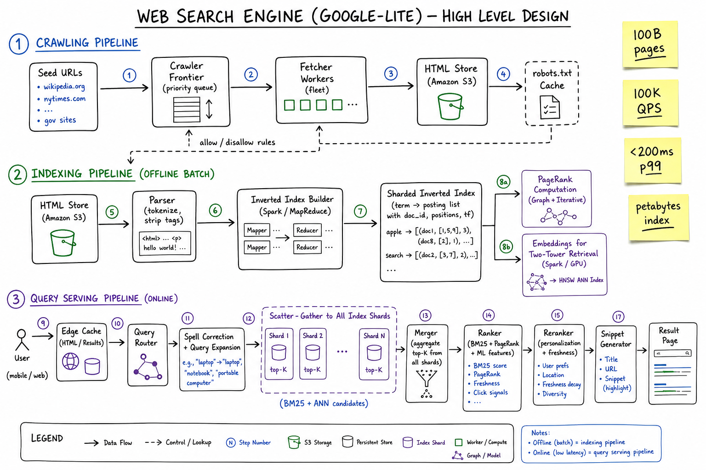
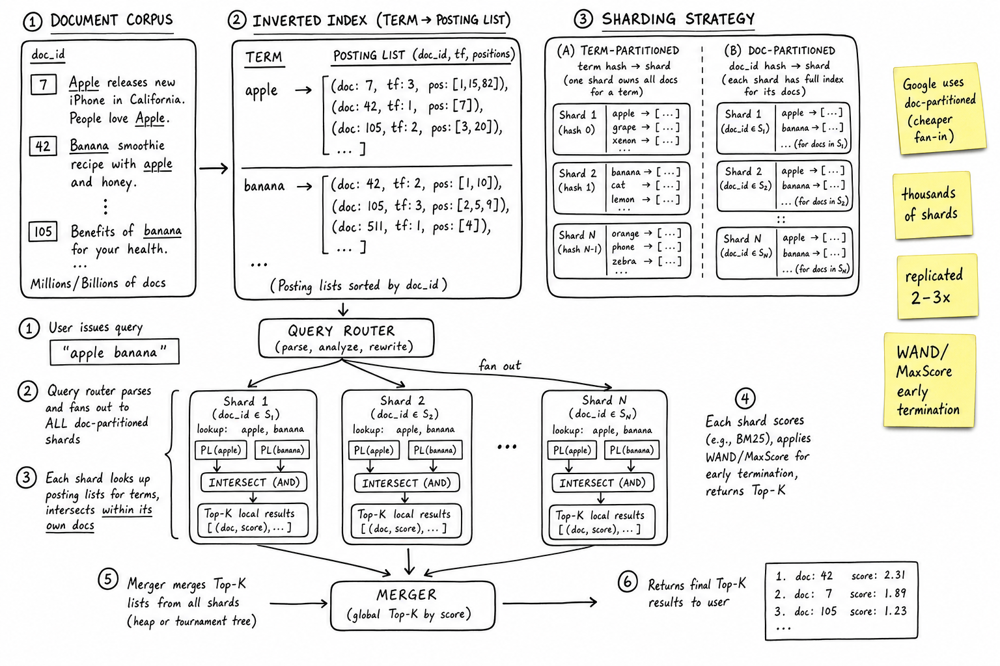
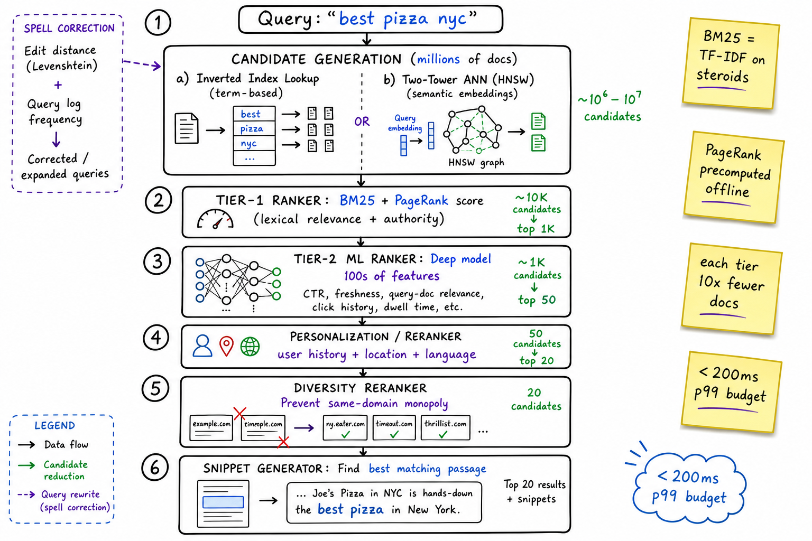

Web Search Engine // HLD
Google-lite: crawl 100B pages, build a sharded inverted index in batch, serve 100K QPS with <200ms p99 via scatter-gather across thousands of shards, rank with BM25 + PageRank + ML, augment with two-tower ANN for semantic, personalize at the edge.

Whiteboard HLD: three pipelines. Crawling (seed URLs → frontier → fetchers → HTML store). Indexing (offline batch: parse, tokenize, build sharded inverted index, compute PageRank, train embeddings + HNSW). Query serving (online: edge cache → query router → spell correct + expand → scatter-gather to all index shards → merge → ranker BM25+PageRank+ML → personalization rerank → snippet generation).
01 — Requirements
Functional
- Crawl the public web continuously, respect
robots.txt - Index pages: text, anchor text, freshness, metadata
- Serve search queries: top-N results with title + URL + snippet
- Spell correction ("did you mean…")
- Query expansion (synonyms, stemming)
- Personalization (history + location reranks)
- Real-time freshness for news / breaking events
Non-Functional
- Low latency: <200ms p99 for the full query path
- High recall + precision: the relevant doc must be in the result, near the top
- Massive scale: 100B pages indexed, petabytes of inverted index, 100K QPS
- High availability: 99.99%; partial degraded results better than no results
- Crawl politely: respect
robots.txt, rate-limit per host - Freshness: news pages indexed within minutes, not days
01a — Core Entities
| Entity | Key Fields | Notes |
|---|---|---|
| URL / Document | doc_id, url, content_hash, fetched_at, http_status, content_type, lang | doc_id is internal monotonic id; url is the canonicalized address. |
| Term | term_id, surface (word), lang | Vocabulary table; tokenizer-normalized. |
| Posting | (term_id, doc_id) → tf, positions[], fields_mask | The actual inverted index entry. fields_mask records whether the term appeared in title/anchor/body. |
| Posting List | term_id → [Posting…] | Sorted by doc_id; compressed (varint/PFOR). |
| PageRank Score | doc_id → rank (float) | Precomputed offline by graph iteration over link structure. |
| Anchor Text | (src_doc, dst_doc) → anchor_text | What other pages say about this page; rich signal. |
| Embedding | doc_id → vector[d] | Dense vector for semantic ANN retrieval (two-tower). |
| Query Log | (query, user_id, ts) → clicks[], dwell_time | Feeds spell correction + ranker training + freshness signals. |
| User Profile | user_id → history_terms, location, language | For personalization rerank. |
01b — API Design
Hot path (user-facing)
GET /search?q=best+pizza+nyc&p=1&hl=en&loc=US
-> {
results: [ { url, title, snippet, score, ranks_used }, ... ],
spellcheck: { corrected: "best pizza nyc" },
total: 1_240_000,
latency_ms: 142
}
GET /suggest?q=best+pi (typeahead; hit-rate cached)
-> { suggestions: ["best pizza", "best pizza nyc", ...] }
Internal (between services)
indexShard.search(query, top_k, filters) -> [(doc_id, local_score), ...]
ranker.score(candidates, features) -> [(doc_id, final_score), ...]
ann.knn(query_vec, top_k) -> [(doc_id, similarity), ...]
snippet.render(doc_id, query_terms) -> string
# Indexing pipeline (offline)
crawler.fetch(url) -> {html, status, headers, ts}
indexer.build(doc_id, html) -> postings, embedding
The non-obvious contract: queries are non-strict. Some shards may time out (>100ms); we return partial results with a "results may be incomplete" flag rather than failing the whole query.
02 — Estimation
Corpus: 100B web pages, avg 10 KB → 1 PB raw HTML
After parse + dedup: ~500 TB unique text
Vocab size: ~10M terms (after stemming, lang split)
Inverted index size: ~5 PB (postings + positions + skip pointers)
Sharded across thousands of nodes, replicated 3x → 15+ PB
Query load: 100K QPS sustained, 500K peak (Olympics, election day)
p99 latency budget: 200ms total
router + parse: 5ms
scatter-gather: 80ms (fastest 95% of shards; outliers skipped)
merge + ranker: 40ms
rerank + personal: 30ms
snippet: 20ms
margin: 25ms
Crawl: 1B pages/day fetched (refresh + new) → ~12K pages/sec03 — Why It's Hard
- Sub-200ms over a petabyte: the only way is massive parallelism (thousands of shards) + WAND-style early termination
- Long tail of queries: 50%+ of daily queries are never seen before; caching helps only the head
- Ranking is the product: BM25 alone is mediocre; PageRank + 100s of ML features are what made Google
- Freshness vs index batch: batch-built indices are days stale; news/sports need a separate realtime index
- Spam and SEO games: adversaries tune to your ranking signals; must keep evolving
- Crawl politeness: hit one site too hard and they block you (or you DOS them)
- Personalization conflicts with caching: if every result is per-user, your cache is useless
04 — Architecture
OFFLINE ONLINE
User
Seed URLs |
| v
v Edge Cache (hot queries)
Crawler Frontier (priority queue, robots.txt) |
| v
v Query Router
Fetcher fleet -> HTML Store (S3) |
| v
v Spell + Expand
Indexer (Spark MapReduce) -> Inverted Index Shards --|--> Scatter-Gather --> [Shard 1..N]
| (each: top-K)
| v /
| Merge top-K -------------------/
v |
PageRank, Embeddings, ANN HNSW v
Ranker (BM25 + PR + ML)
|
v
Reranker (personalization)
|
v
Snippet generator -> Response
05 — Crawler
The crawler is its own beast — see the Web Crawler cheatsheet for the full design. Highlights relevant here:
- Frontier: priority queue of URLs to fetch; priority = PageRank-ish + freshness need + politeness budget
- Fetcher fleet: thousands of workers; per-host rate limiting; honor
robots.txt - Dedup: by content hash (skip pages identical to ones already indexed) and URL canonicalization
- HTML store: raw HTML kept in S3-like object storage so re-indexing doesn't need a re-crawl
- Refresh policy: pages re-crawled at a rate proportional to change frequency (news = minutes, encyclopedia = months)
06 — Indexer (Offline Batch)
The pipeline
- Parse HTML → strip boilerplate, extract title/anchor/body/meta
- Tokenize → word boundaries, lowercase, language detection
- Normalize → stem ("running" → "run"), Unicode-fold, drop stopwords
- Emit postings → (term, doc_id, tf, positions, fields_mask)
- Shuffle + sort by term (or by doc, depending on partition strategy)
- Write posting lists → compressed binary, sorted by doc_id, with skip pointers
MapReduce / Spark
Map: (doc_id, html) -> (term, doc_id, tf, positions, fields_mask) Reduce: term -> [postings sorted by doc_id] # the posting list Output: per-shard inverted index files
Side outputs
- PageRank: separate iterative job over link graph (50–100 iterations to converge)
- Anchor text aggregation: for each
dst_doc, collect anchor text of inbound links - Document embeddings: doc-tower from two-tower model; bulk-write to ANN index (HNSW)
Index build is massively parallel and runs as a periodic batch (e.g., daily for the bulk index, separate near-realtime path for fresh news).
07 — Inverted Index & Sharding

Zoom: inverted index = term → [posting…]. Two sharding strategies. Term-partitioned: each shard owns a slice of the vocabulary. Doc-partitioned: each shard owns a slice of doc IDs and a full inverted index for those docs. Google uses doc-partitioned.
Posting list structure
apple -> [ (doc:7, tf:3, pos:[1,15,82], fields:title|body),
(doc:42, tf:1, pos:[7], fields:body),
(doc:105, tf:2, pos:[3,20], fields:body),
... ]
banana -> [ ... ]
Storage: varint/PFOR-encoded delta-gaps + skip pointers for AND/OR.
Term-partitioned vs doc-partitioned
| Strategy | How | Pros | Cons |
|---|---|---|---|
| Term-partitioned | hash(term) → shard; shard owns whole posting list | Per-term lookup hits one shard | Multi-term query: heavy cross-shard intersection; hot terms = hot shards |
| Doc-partitioned | hash(doc_id) → shard; each shard has full inverted index for its docs | Multi-term AND/OR happens locally; load balances naturally | Every query fans out to every shard (huge scatter-gather) |
Google uses doc-partitioned. Scatter-gather is cheaper than cross-shard joins, and you can early-terminate with WAND/MaxScore on each shard locally.
08 — Query Path
Latency budget is brutal. The tail latency of the slowest shard drives p99; we skip outlier shards beyond ~100ms and live with slight recall loss.
09 — Ranking

Zoom: ranking funnel. Candidate generation (millions → 10K) by inverted-index AND ANN. Tier-1 (BM25+PageRank) 10K → 1K. Tier-2 ML deep model 1K → 50. Personalization 50 → 20. Diversity rerank.
Signals
| Signal | What it measures |
|---|---|
| BM25 | TF-IDF on steroids: term frequency in doc, normalized by doc length, dampened |
| PageRank | Graph centrality: pages linked-to by many trusted pages are higher |
| Anchor text | What others say about you (often more accurate than what you say about yourself) |
| Freshness | Decay function of now - last_updated; query-dependent (news vs encyclopedia) |
| Click signals | Aggregated CTR + dwell time on this query/doc pair |
| Semantic similarity | Cosine between query embedding and doc embedding (two-tower) |
| User signals | Personal history, location, device, language |
| Quality signals | Spam classifier, EAT (expertise/authority/trustworthiness), domain reputation |
10 — Two-Tower / ANN Semantic Retrieval
The model
- Query tower: NN that maps query → vector[d]
- Doc tower: NN that maps doc text+metadata → vector[d]
- Training: positive pairs (clicked query/doc) and hard negatives; loss = contrastive (in-batch negatives + sampled negatives)
- At index time, embed every doc, push into HNSW ANN index
- At query time, embed query →
HNSW.knn(query_vec, top_k)in <10ms
Why have it alongside inverted index?
- Inverted index does lexical matching: misses synonyms, paraphrases, multi-language
- Two-tower handles "best place to eat ramen in NY" matching a doc titled "top NYC noodle shops"
- Hybrid: union the two candidate sets, let the ranker arbitrate
11 — Caching, Spell, Snippets
Cache layers
- Edge result cache: full result page for hot queries; key = (query, lang, country, signed-out)
- Query result cache: top-K doc_ids for the query; per ranker version
- Posting-list cache: hottest posting lists in RAM at each shard
- Cache stampede prevention: see Distributed Cache for the techniques
Spell correction
Generate candidates: Levenshtein edit distance ≤ 2 over vocab
Rank candidates: P(correction | typo) ~ P(correction) * P(typo | correction)
Use query log frequency as prior; noisy-channel for likelihood
Snippet generation
- Find best-matching passage in doc containing query terms
- Bold matched terms; clip to ~160 chars; pick the densest window
- Cache snippets per (doc, query-bigram) to avoid recomputation
12 — Scaling
- Thousands of doc-partitioned shards — the scatter-gather is the work-horse
- Replicas per shard (3×) for availability and read-throughput
- Hot-query edge cache absorbs ~30% of traffic before it ever hits the router
- Geographic data centers serving regional queries with local indices + cross-region failover
- Realtime news index: separate small fresh index built every few minutes; merged into results
- Tail-latency mitigation: tied requests (fire to two replicas, take whichever returns first), skip slowest shard, return partial
- Index update: build new index version offline, swap atomically via shard-level cutover (blue-green)
13 — Edge Cases
- Slow shard → skip after 100ms; flag result as partial; warn metric
- Query with zero results → relax query (drop quotes, broader stemming) and retry
- Malicious query patterns (DOS) → rate limit per IP / user; return cached generic results for abusers
- Spam pages → offline spam classifier marks docs; rank-pushes them down or removes from index
- Right-to-be-forgotten → deny-list of doc URLs; filter at query time before snippet generation
- News surge (election, earthquake) → realtime index promoted, normal index downweighted for freshness
- Crawler blocked by host → backoff, lower priority, try cached versions, eventually drop
- Index swap mid-traffic → blue-green at shard level; gradual rollout with canary; rollback on quality drop
- Personalization signal stale → fall back to demographic / coarse signal; never block the response
14 — Real-World Equivalents
| Company | Notes |
|---|---|
| Caffeine indexing system; thousands of doc-partitioned shards; Spanner for metadata; MUM/BERT in ranker. | |
| Bing | Same architecture; heavier ML integration earlier (RankNet); now Microsoft's Copilot retrieval backend. |
| Elasticsearch / OpenSearch | Apache Lucene under the hood; the building block search teams reuse for internal search. |
| DuckDuckGo | Aggregator + own crawler/index for some verticals; relies heavily on Bing API for the long tail. |
| Internet Archive / Common Crawl | Open corpus; the raw HTML you'd start with if you tried to build a competitor. |
| Vertical search (Yelp, Zillow, Amazon) | Same algorithms over a structured catalog; ranking features tuned to the domain. |